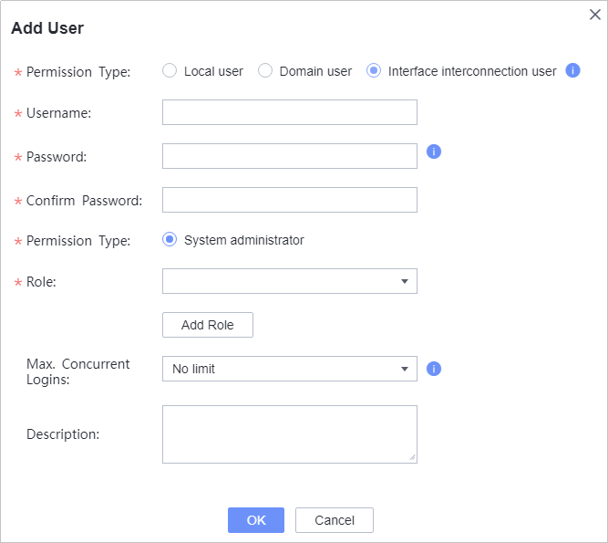

Before performing FusionCompute backup, create a user for interconnecting FusionCompute with the product on the FusionCompute management page by referring to this section.
Precautions
This section uses FusionCompute 8.6.0 as an example. The GUI varies depending on the version.
Procedure
- Log in to FusionCompute using a browser.
Login address: https://Floating IP address of the VRM node of FusionCompute:8443
- Create a role on the FusionCompute WebUI. This role is used to create an account for interconnecting with the product.
- Choose System Management > Rights Management > Role Management.
- Click Add Role.
- Enter the role information.
- Click OK.
- On the FusionCompute WebUI, create an account for interconnecting with the product.
- Choose System Management > Rights Management > User Management.
- Click Add User.
- Enter the user information.
Set
Permission Type to
Interface interconnection user and
Role to
OceanProtect.
Figure 2 Creating an interface interconnection user

- Click OK.
- Choose System Management > Rights Management > Rights Management Policy.
- In the Password Policy area, click Modify.
- Change the current rule of Interface interconnection user forcibly change passwords upon a reset or initial login. to No.
- Click Save.